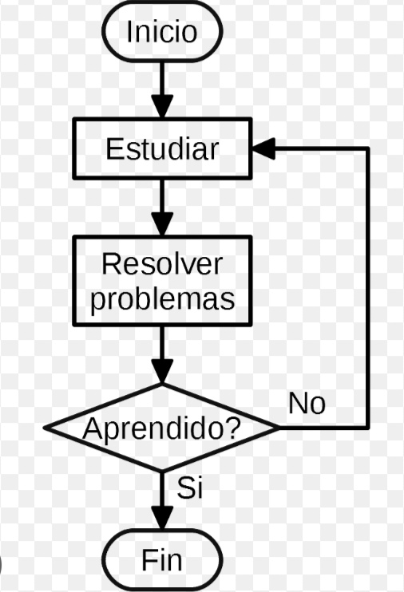

📘 Unidad 1 — Sistemas de Numeración
En esta unidad aprendí sobre los sistemas de numeración, que me permiten comprender cómo se representan los números en diferentes bases como binaria, octal y hexadecimal.
La introducción de este tema es fundamental porque nos enseña que los números no siempre se escriben de la misma manera; dependen del sistema que se utilice. Esto es muy importante en la informática, ya que las computadoras trabajan principalmente con el sistema binario, y comprenderlo nos ayuda a entender mejor cómo se almacenan y procesan los datos.
También descubrí que los sistemas de numeración son una herramienta esencial para convertir valores entre distintas bases y para interpretar información técnica de una manera más clara y organizada.
Lo que vimos: Los números binarios y conversiones entre sistemas.
✅ Binario a Octal: 10110₂ = 26₈
✅ Octal a Decimal: 34₈ = 28₁₀
✅ Decimal a Octal: 45₁₀ = 55₈
✅ Decimal a Binario: 19₁₀ = 10011₂
✅ Binario a Decimal: 1101₂ = 13₁₀
✅ Decimal a Hexadecimal: 254₁₀ = FE₁₆
✅ Hexadecimal a Decimal: 2B₁₆ = 43₁₀
📗 Unidad 2 — Algoritmos
En esta unidad conocí la importancia de los algoritmos, ya que sirven para resolver problemas paso a paso de forma ordenada, lógica y clara.
La introducción a este tema me permitió comprender que un algoritmo es la base para diseñar soluciones eficientes y para desarrollar programas con un razonamiento estructurado. Aprendí que resolver un problema no consiste solo en encontrar una respuesta, sino en encontrar la mejor forma de llegar a ella de manera lógica y ordenada.
Además, comprendí que los diagramas de flujo y el pseudocódigo son herramientas muy útiles para representar ideas, planificar procesos y facilitar la comprensión de cualquier solución antes de programarla.
Lo que vimos: Los algoritmos, diagrama de flujo y pseudocódigo.
Ejemplo: Estudiar y aprender

Imagen de un algoritmo sencillo para la Unidad 2.
Pseudocódigo:
📙 Unidad 3 — Python y Lógica Digital
En esta unidad exploré la relación entre Python y la lógica digital, comprendiendo cómo las instrucciones y los circuitos pueden trabajarse de forma estructurada.
La introducción de este tema fue muy interesante porque muestra cómo la programación y la electrónica se unen para crear soluciones tecnológicas más complejas y funcionales. Aprendí que Python es una herramienta poderosa para expresar ideas y automatizar procesos, mientras que la lógica digital permite comprender el funcionamiento interno de los dispositivos y sistemas tecnológicos.
Esta unidad me ayudó a ver que la tecnología no solo se basa en escribir código, sino también en entender el razonamiento detrás de cada proceso, desde una simple instrucción hasta un circuito más elaborado.
🔹 Ejemplo en Python
🔹 Suma Binaria — Ejemplo: 1011 + 1101
Resultado: 1011 + 1101 = 11000
+ 1 1 0 1 (13)
-------
1 1 0 0 0 (24)
Paso a paso:
1ª columna: 1+1=2 → se escribe 0 y se lleva 1
2ª columna: 1+0+1=2 → se escribe 0 y se lleva 1
3ª columna: 0+1+1=2 → se escribe 0 y se lleva 1
4ª columna: 1+1+1=3 → se escribe 1 y se lleva 1
Último: se baja el 1 que sobra → 11000
🔹 Mapa de Karnaugh — Ejemplo: F(x,y) = Σ(0, 1, 3)
x | y | F
---|---|---
0 | 0 | 1
0 | 1 | 1
1 | 0 | 0
1 | 1 | 1
🟦 Mapa de Karnaugh
y=0 y=1
x=0 1 1
x=1 0 1
✅ Simplificación: F = x' + y